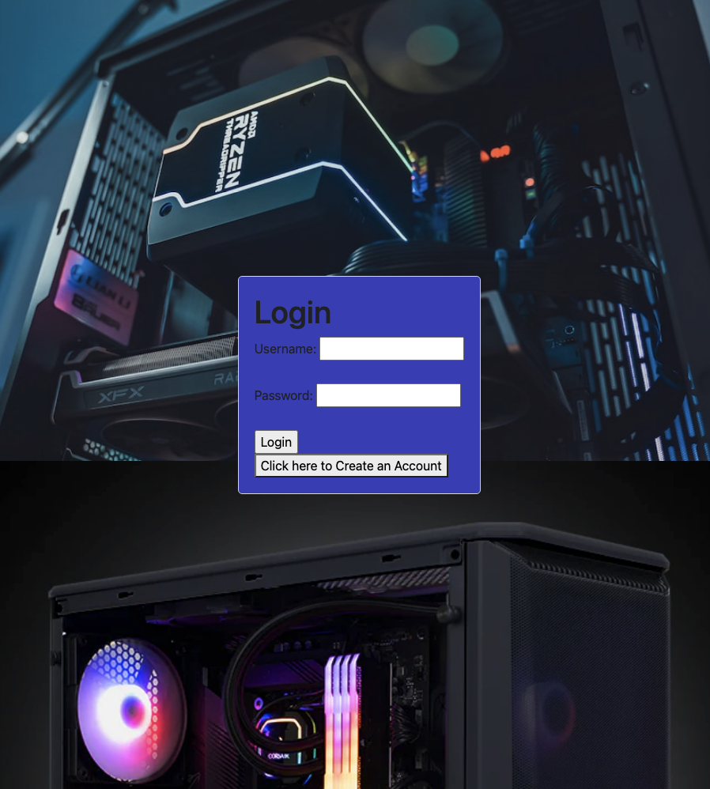

LAMP Computer Part Configuration Website
Our platform empowers users to create their own personalized computer configurations online. With a user-friendly interface, they can explore a vast selection of computer components, including CPUs, GPUs, RAM, storage devices, motherboards, and more. The intuitive drag-and-drop feature allows users to effortlessly assemble and customize their ideal computer builds. One of the standout features of our website is the robust compatibility checking system. We understand the importance of ensuring that all selected components work harmoniously together. Our advanced algorithm analyzes the specifications of each component and intelligently checks for compatibility issues, eliminating the risk of purchasing incompatible parts. This feature saves users time, money, and frustration, guaranteeing a seamless and efficient building process.To enhance the user experience, we offer secure user account creation and storage of credentials and computer builds in our reliable database. Users can easily access and modify their configurations at any time, providing a convenient and personalized experience.
Behind the scenes, our development team leveraged the power of PHP to handle dynamic content generation and server-side functionality. The Linux operating system provides a stable and secure environment, while Oracle offers a robust and scalable database solution for efficient data management. HTML/CSS and JavaScript were utilized to design an appealing and responsive user interface, ensuring an enjoyable browsing experience on various devices. SQL was employed to query and manage data in our database, ensuring seamless data retrieval and storage.